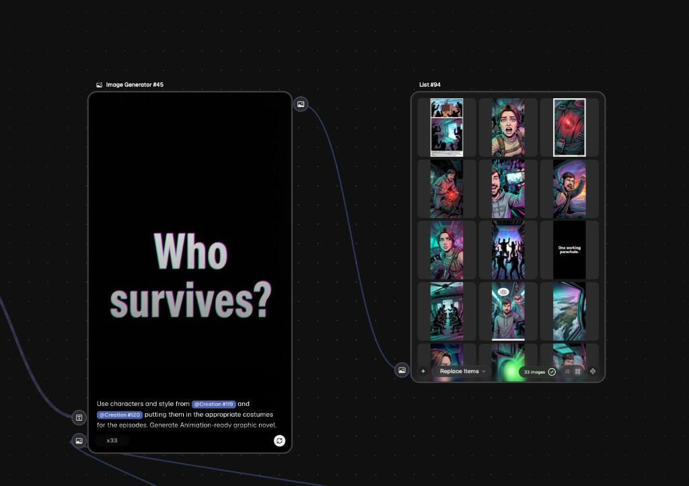
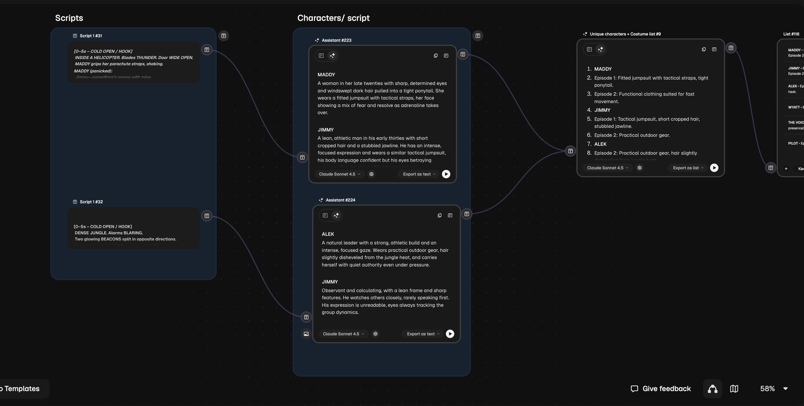
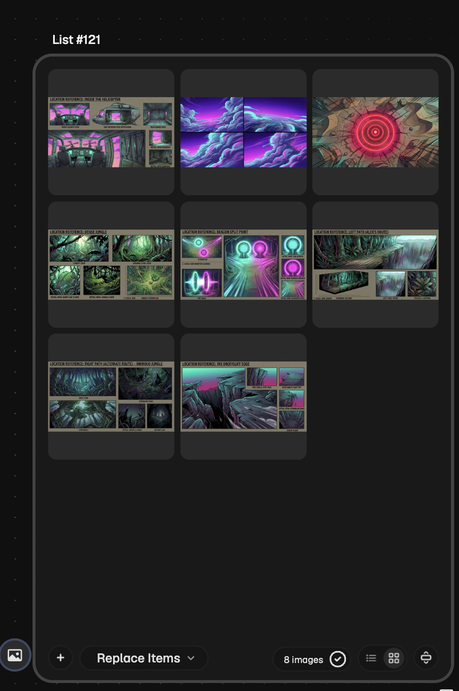

ComfyUI · LoRA Training · LLM Extraction · Production Automation

A large-scale AI production pipeline built for a major entertainment client, processing over 50 episode scripts into a consistent, character-driven visual asset library. The core engineering challenge was not generation quality — it was consistency at scale: maintaining recognizable characters, coherent visual language, and narrative continuity across thousands of assets spanning multiple episodes, locations, and emotional registers.


Character Consistency at Scale — LoRA Training Pipeline
The fundamental problem with high-volume AI asset generation for episodic content is identity drift. A character generated across hundreds of scenes, emotions, and camera angles will gradually drift from their reference appearance unless the model has been explicitly conditioned on that character's visual identity. Prompt-based character description alone cannot solve this — natural language descriptions of appearance are too underspecified to constrain generation reliably across diverse contexts.
The solution was a custom character extraction and LoRA training pipeline. Scripts were parsed using an LLM-based entity extraction layer that identified recurring characters, tracked their episodic appearances, and pulled dialogue, action lines, and scene context associated with each character. This structured character data was then used to construct curated training datasets — selecting, captioning, and preprocessing source images to build per-character LoRA models.
The trained LoRAs were integrated into the ComfyUI generation workflows as character conditioning layers, giving the pipeline reliable identity control independent of prompt variation. The same character could be generated across wildly different scenes — jungle environments, interior close-ups, action sequences, emotional beats — while maintaining recognizable facial structure, costume consistency, and stylistic coherence with the broader visual language of the production.
Safety-Aware Shotlist Generation
AI-generated shotlists at production scale exhibit a predictable failure distribution: the same problematic shot types, cinematic clichés, and production-incompatible framings recur across batches regardless of prompt quality. The standard response — manual review and correction — does not scale to episodic volume.
The quality-control framework built here moves the correction upstream, into the generation process itself. The system maintains a structured registry of "red flag" patterns: specific visual configurations, shot types, and compositional choices that had been identified as production failures through prior batch review. Alongside these, curated examples of both successful and unsuccessful outputs were catalogued with annotated reasoning about why each succeeded or failed.
This knowledge was injected into the generation pipeline as structured guidance — not as a simple negative prompt list, but as contextual generation constraints that conditioned output toward production-compatible framing decisions. The result was a measurable reduction in problematic shots across batches and a corresponding reduction in downstream creative review time. Rather than filtering bad output after the fact, the pipeline was designed to be less likely to produce it in the first place.
ComfyUI Workflow Architecture
The asset generation layer was built on a set of purpose-built ComfyUI workflows handling distinct production tasks: character turnarounds across standardized camera angles and lighting conditions, environment exploration generating multiple atmospheric and lighting variations of each location, storyboard panel generation combining character LoRAs with environment conditioning and shot-specific framing, and batch asset pipelines for high-volume generation with automated prompt construction from script data.
Each workflow used reference conditioning alongside the trained LoRAs — rather than relying on a single generation mode, the pipeline could accept a reference frame, a character description, a location brief, or a combination, and route the appropriate conditioning inputs accordingly. Automated prompt construction, seeded from the structured script data extracted upstream, eliminated manual prompt authoring for the majority of generation tasks and ensured that scene context, character state, and narrative beat were consistently represented in the outputs.
The architecture was designed for repeatability: every generation run was seeded and logged, allowing specific outputs to be reproduced exactly, parameter variations to be tracked across batches, and quality regressions to be diagnosed against known-good configurations.